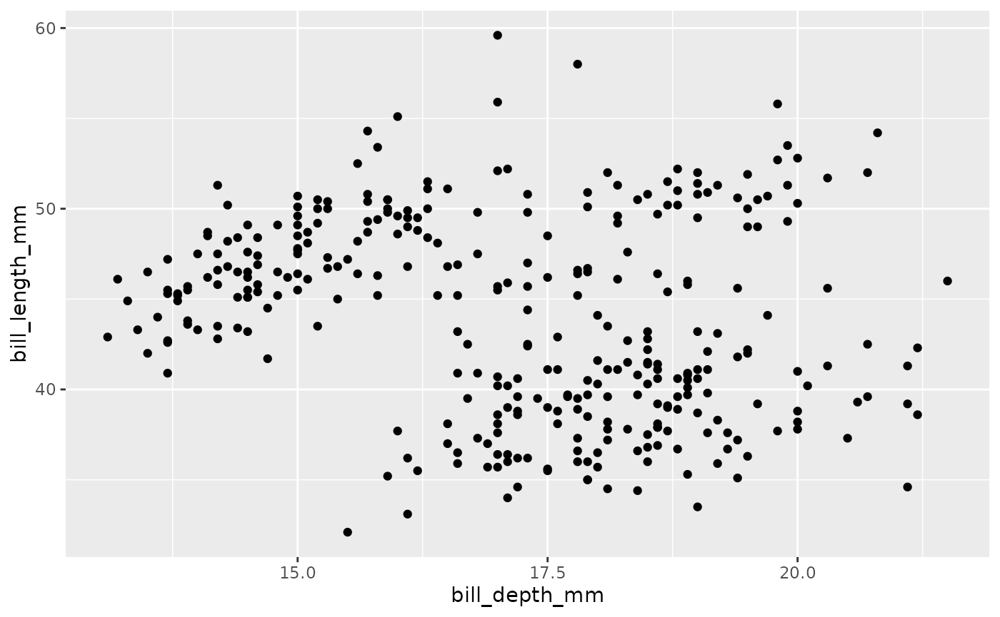
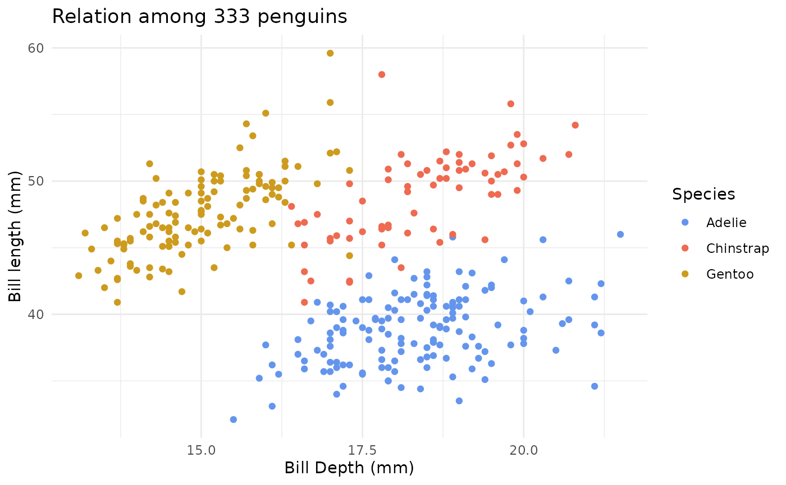
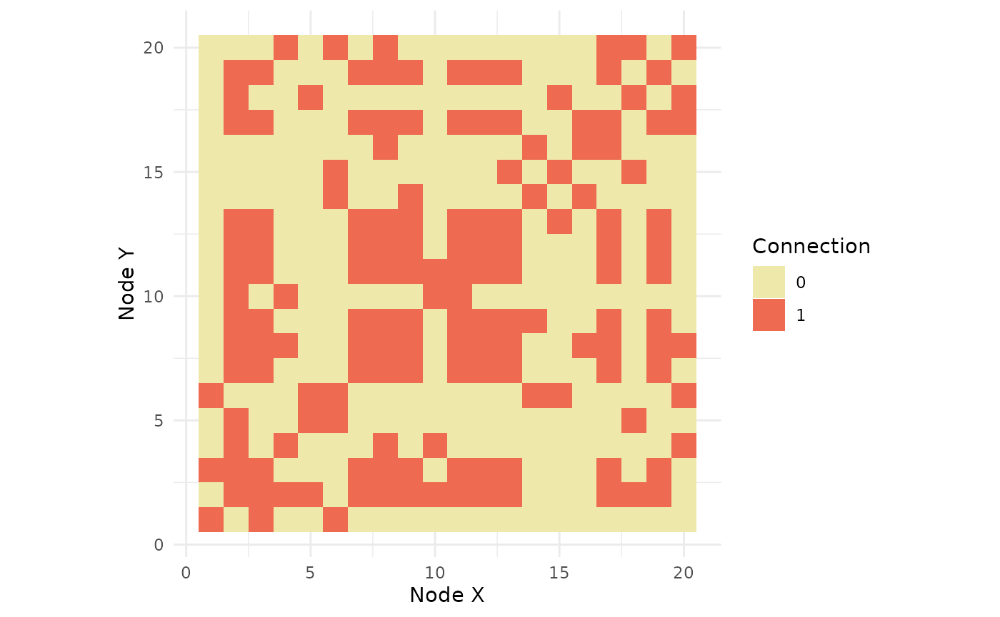
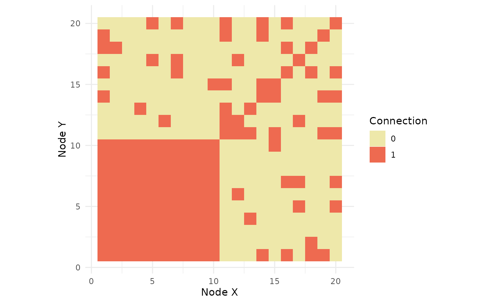

BIOST 561: Homework 2
Due date: 7:00pm on Monday, April 28nd, 2025
HW2.RmdInstructions
These instructions are essential, so please read them all carefully.
Submit your homework on your GitHub page as the RMarkdown (
.Rmd) and HTML files.Please answer the question prompt and show your code (inline). That is, all your code should be visible in the knitted chunks.
To complete this homework, you may write in the
HW2.Rmdfile. (It is recommended to complete this homework in R Studio, where clicking theKnitbutton would knit your homework.)
Disclosures
- Please disclose below who you collaborated with and if you’ve used ChatGPT (or any comparable AI tool) to what extent when completing this homework. See the syllabus for the course expectations.
I used chatgpt to modify ggplot code and to help me read what functions do.
(Hint: If you feel stuck in this homework, feel free to consult ChatGPT. Often, you need to double-check the responses from ChatGPT to verify its correctness. I would advise you to ask ChatGPT to generate minimal examples to demonstrate how to use various functions, as this will provide you with a clear example of how the function works.)
Q0: Setting up your UWBiost561 package
You do not need to write anything about any part of this question.
Question 0A: Install tidyverse.
(This will involve typing install.packages("tidyverse") in
the R console. You do not need to put this in your Markdown file.)
Question 0B: Update DESCRIPTION
in your R package. That is, there is a file called
DESCRIPTION in your UWBiost561 package. It
should look something like this:
Suggests:
knitr,
rmarkdownAdd the following lines to the DESCRIPTION to include
bookdown, tidyverse, and ggplot2.
It should look like something like:
Suggests:
knitr,
rmarkdown,
bookdown,
tidyverse,
ggplot2Save the file and close it.
Question 0C: Make sure you can load your
package. (You need the bookdown package to knit the
homework, similar to HW1.)
library(bookdown)
library(tidyverse)
#> ── Attaching core tidyverse packages ──────────────────────── tidyverse 2.0.0 ──
#> ✔ dplyr 1.1.4 ✔ readr 2.1.5
#> ✔ forcats 1.0.0 ✔ stringr 1.5.1
#> ✔ ggplot2 3.5.2 ✔ tibble 3.3.0
#> ✔ lubridate 1.9.4 ✔ tidyr 1.3.1
#> ✔ purrr 1.0.4
#> ── Conflicts ────────────────────────────────────────── tidyverse_conflicts() ──
#> ✖ dplyr::filter() masks stats::filter()
#> ✖ dplyr::lag() masks stats::lag()
#> ℹ Use the conflicted package (<http://conflicted.r-lib.org/>) to force all conflicts to become errors
library(ggplot2)(This might throw a warning about a “conflicted package.” You can ignore it.)
Question 0D: Double check the following things about your R package:
- Your
HW1.html,HW1.Rmd,HW2.Rmd(this file), and your to-be-createdHW2.htmlfiles are only in thevignettesfolder of your R package. There is no.gitignorefile in thevignettesfolder. (Please delete the.gitignorefile if one exists.)
Q1: Practice using tibbles
Intent: This question is to give you some basic practice using tibbles (and the tidyverse way of analyzing data, overall).
For this question, we’ll be using two datasets that collect various
statistics of countries over many years. The first dataset is the
gt package (see https://search.r-project.org/CRAN/refmans/gt/html/countrypops.html),
and has been formatted specifically for this homework. It can be loaded
in the following code:
country_population <- readr::read_csv("https://raw.githubusercontent.com/linnykos/561_s2025_public/main/HW2_files/country_population.csv")
#> Rows: 13545 Columns: 4
#> ── Column specification ────────────────────────────────────────────────────────
#> Delimiter: ","
#> chr (2): iso3c, country
#> dbl (2): year, population
#>
#> ℹ Use `spec()` to retrieve the full column specification for this data.
#> ℹ Specify the column types or set `show_col_types = FALSE` to quiet this message.
country_population
#> # A tibble: 13,545 × 4
#> iso3c country year population
#> <chr> <chr> <dbl> <dbl>
#> 1 ABW Aruba 1960 54608
#> 2 ABW Aruba 1961 55811
#> 3 ABW Aruba 1962 56682
#> 4 ABW Aruba 1963 57475
#> 5 ABW Aruba 1964 58178
#> 6 ABW Aruba 1965 58782
#> 7 ABW Aruba 1966 59291
#> 8 ABW Aruba 1967 59522
#> 9 ABW Aruba 1968 59471
#> 10 ABW Aruba 1969 59330
#> # ℹ 13,535 more rows(Note that we’re reading the data using the
readr::read_csv function, which automatically converts the
csv data into a tibble. This is not the same
as the read.csv function. See ?readr::read_csv
and ?read.csv.) country_population contains
the following columns:
-
iso3c: Three-letter country code (see https://en.wikipedia.org/wiki/ISO_3166-1_alpha-3) -
country: Country name -
year: Year the statistic is collected -
population: Population, based on the World Bank estimate
The next dataset is from https://paldhous.github.io/NICAR/2017/r-analysis.html, and has also been formatted specifically for this homework. It can be loaded in the following code:
country_birth <- readr::read_csv("https://raw.githubusercontent.com/linnykos/561_s2025_public/main/HW2_files/country_birth.csv")
#> Rows: 5486 Columns: 5
#> ── Column specification ────────────────────────────────────────────────────────
#> Delimiter: ","
#> chr (1): iso3c
#> dbl (4): year, life_expect, birth_rate, neonat_mortal_rate
#>
#> ℹ Use `spec()` to retrieve the full column specification for this data.
#> ℹ Specify the column types or set `show_col_types = FALSE` to quiet this message.
country_birth
#> # A tibble: 5,486 × 5
#> iso3c year life_expect birth_rate neonat_mortal_rate
#> <chr> <dbl> <dbl> <dbl> <dbl>
#> 1 AND 1994 NA 10.9 3.2
#> 2 AND 1995 NA 11 3
#> 3 AND 2006 NA 10.6 1.9
#> 4 AND 2007 NA 10.1 1.8
#> 5 AND 1996 NA 10.9 2.8
#> 6 AND 1993 NA 11.4 3.4
#> 7 AND 1997 NA 11.2 2.6
#> 8 AND 1998 NA 11.9 2.4
#> 9 AND 2008 NA 10.4 1.8
#> 10 AND 2009 NA 9.9 1.7
#> # ℹ 5,476 more rowscountry_birth contains the following columns:
-
iso2c: Two-letter country code -
iso3c: Three-letter country code -
year: Year the statistic is collected -
life_expect: Life expectancy at birth, in years. -
birth_rate: Live births during the year per 1,000 people -
neonat_mortal_rate: Neonatal mortality rate: babies dying before reaching 28 days of age per 1,000 live births in a given year
This question will allow you to practice basic data manipulation of
these two tibble objects.
Question 1A: We will be manipulating the
country_population data in this question. Your goal is the
following: Select only rows for years between 1990 and 2010 (inclusive).
Then, compute the mean population across all the years of a country for
each country (defining a new variable called
mean_population, via the group_by() and
summarize() functions).
Figure @ref(fig:population) shows the first two rows of your desired output.
pop1 = filter(country_population, year %in% c(1990:2010)) %>%
group_by(iso3c,country) %>%
summarize(
mean_population = mean(population, na.rm = T)
)
#> `summarise()` has grouped output by 'iso3c'. You can override using the
#> `.groups` argument.
pop1
#> # A tibble: 215 × 3
#> # Groups: iso3c [215]
#> iso3c country mean_population
#> <chr> <chr> <dbl>
#> 1 ABW Aruba 85839.
#> 2 AFG Afghanistan 19819866.
#> 3 AGO Angola 16829911.
#> 4 ALB Albania 3095489.
#> 5 AND Andorra 67825.
#> 6 ARE United Arab Emirates 3858774.
#> 7 ARG Argentina 36972314.
#> 8 ARM Armenia 3211816.
#> 9 ASM American Samoa 54995.
#> 10 ATG Antigua and Barbuda 74385.
#> # ℹ 205 more rows
The output you are trying to reproduce (without the Sample watermark) in Question 1A.
Question 1B: We will be manipulating the
country_birth data in this question. Your goal is the
following: Select only rows for years between 1990 and 2010 (inclusive),
keep the iso3c, year, life_expect
columns, and then drop all rows with any NA in any of the 3
columns. Then, compute the minimum and maximum life expectancy (named as
new columns called min_life_expect and
max_life_expect) for each country across all the years (via
the summarize() function), and finally, create a new column
called range_life_expect that is the number of years
between min_life_expect and max_life_expect
for each country (via the mutate() function).
birth1 = filter(country_birth, year %in% c(1990:2010)) %>%
select(iso3c, year, life_expect) %>%
filter(!is.na(iso3c),!is.na(year),!is.na(life_expect)) %>%
group_by(iso3c) %>%
summarize(
min_life_expect = min(life_expect),
max_life_expect = max(life_expect)
) %>%
mutate(
range_life_expect = max_life_expect - min_life_expect
)
birth1
#> # A tibble: 203 × 4
#> iso3c min_life_expect max_life_expect range_life_expect
#> <chr> <dbl> <dbl> <dbl>
#> 1 ABW 73.4 75.0 1.56
#> 2 AFG 49.9 59.0 9.11
#> 3 AGO 41.1 50.7 9.52
#> 4 ALB 71.9 77.0 5.14
#> 5 ARE 71.7 76.7 4.96
#> 6 ARG 71.5 75.5 3.94
#> 7 ARM 67.7 74.2 6.49
#> 8 ATG 71.2 75.3 4.15
#> 9 AUS 77.0 81.7 4.70
#> 10 AUT 75.6 80.6 5.01
#> # ℹ 193 more rowsFigure @ref(fig:birth) shows the first two rows of your desired output.

The output you are trying to reproduce (without the Sample watermark) in Question 1B.
Question 1C: We will now combine
country_population and country_birth via a
join. Specifically, using an inner_join() function, combine
both these datasets by the iso3c variable, and call the new
tibble object as country_both. Print out the
first 10 rows of country_both. How many rows and columns
are in country_both?
country_both = inner_join(pop1, birth1, by = "iso3c")
country_both
#> # A tibble: 202 × 6
#> # Groups: iso3c [202]
#> iso3c country mean_population min_life_expect max_life_expect
#> <chr> <chr> <dbl> <dbl> <dbl>
#> 1 ABW Aruba 85839. 73.4 75.0
#> 2 AFG Afghanistan 19819866. 49.9 59.0
#> 3 AGO Angola 16829911. 41.1 50.7
#> 4 ALB Albania 3095489. 71.9 77.0
#> 5 ARE United Arab Emirates 3858774. 71.7 76.7
#> 6 ARG Argentina 36972314. 71.5 75.5
#> 7 ARM Armenia 3211816. 67.7 74.2
#> 8 ATG Antigua and Barbuda 74385. 71.2 75.3
#> 9 AUS Australia 19200991. 77.0 81.7
#> 10 AUT Austria 8057573. 75.6 80.6
#> # ℹ 192 more rows
#> # ℹ 1 more variable: range_life_expect <dbl>Q2: Practice using ggplot via scatterplots and facets
Intent: This question is to give you some basic practice using ggplot, mainly plotting scatterplots and faceting the plots.
For this question, we’ll be using a dataset about the penguins from the Palmer Archipelago from https://allisonhorst.github.io/palmerpenguins/reference/penguins.html. We’ve processed it lightly for this homework.
penguins <- readr::read_csv("https://raw.githubusercontent.com/linnykos/561_s2025_public/main/HW2_files/palmerpenguins.csv")
#> Rows: 333 Columns: 8
#> ── Column specification ────────────────────────────────────────────────────────
#> Delimiter: ","
#> chr (3): species, island, sex
#> dbl (5): bill_length_mm, bill_depth_mm, flipper_length_mm, body_mass_g, year
#>
#> ℹ Use `spec()` to retrieve the full column specification for this data.
#> ℹ Specify the column types or set `show_col_types = FALSE` to quiet this message.
penguins
#> # A tibble: 333 × 8
#> species island bill_length_mm bill_depth_mm flipper_length_mm body_mass_g
#> <chr> <chr> <dbl> <dbl> <dbl> <dbl>
#> 1 Adelie Torgersen 39.1 18.7 181 3750
#> 2 Adelie Torgersen 39.5 17.4 186 3800
#> 3 Adelie Torgersen 40.3 18 195 3250
#> 4 Adelie Torgersen 36.7 19.3 193 3450
#> 5 Adelie Torgersen 39.3 20.6 190 3650
#> 6 Adelie Torgersen 38.9 17.8 181 3625
#> 7 Adelie Torgersen 39.2 19.6 195 4675
#> 8 Adelie Torgersen 41.1 17.6 182 3200
#> 9 Adelie Torgersen 38.6 21.2 191 3800
#> 10 Adelie Torgersen 34.6 21.1 198 4400
#> # ℹ 323 more rows
#> # ℹ 2 more variables: sex <chr>, year <dbl>You can see its original documentation for describing the variables in the dataset.
The following code makes a basic scatter plot. We will be improving this plot over the following sub-questions.
penguins %>%
ggplot(aes(x = bill_depth_mm, y = bill_length_mm)) +
geom_point()
Question 2A: With the penguins
dataset, change the x-axis label and y-axis label to say
Bill Depth (mm) and Bill length (mm)
respectively, as well as the title of the plot to write
Relation among ??? penguins, where you use code to count
how many rows there are in penguins automatically (in place
of ???). Additionally, color each point based on their
species, where Adelie has the color
cornflowerblue, Chinstrap has the color
coral2, and Gentoo has the color
goldenrod3.
penguins %>%
ggplot(aes(
x = bill_depth_mm,
y = bill_length_mm,
color = species
)) +
geom_point() +
scale_color_manual(
values = c(
"Adelie" = "cornflowerblue",
"Chinstrap" = "coral2",
"Gentoo" = "goldenrod3"
)
) +
labs(
x = "Bill Depth (mm)",
y = "Bill length (mm)",
color = "Species",
title = paste0(
"Relation among ",
nrow(penguins),
" penguins"
)
) +
theme_minimal()
(Hint: You will likely need the scale_color_manual(),
labs(), and paste() functions.)
(You can see https://sites.stat.columbia.edu/tzheng/files/Rcolor.pdf to see where these color names come from.)
Figure @ref(fig:scatterplot) shows the plot you are trying to reproduce.

The plot you are trying to reproduce (without the Sample watermark) in Question 2A.
Question 2B: We now will make the following
changes: 1) we will facet the scatterplot based on the
species, 2) we will add a linear regression fit on each
species (regression bill_length_mm onto the
bill_depth_mm) and plot the linear regression fit, and 3)
changing the transparency of the points to be 50% transparent (i.e.,
alpha=0.5).
(Hint: This question is a bit tricky since many things are going on.
You will likely need the geom_smooth() and
facet_wrap() functions.)
penguins %>%
ggplot(aes(
x = bill_depth_mm,
y = bill_length_mm,
color = species
)) +
geom_point(alpha = 0.5) +
geom_smooth(method = "lm", se = FALSE) +
scale_color_manual(
values = c(
"Adelie" = "cornflowerblue",
"Chinstrap" = "coral2",
"Gentoo" = "goldenrod3"
)
) +
facet_wrap(~ species) +
labs(
x = "Bill Depth (mm)",
y = "Bill length (mm)",
color = "Species",
title = paste0(
"Relation among ",
nrow(penguins),
" penguins"
)
) +
theme_minimal()
#> `geom_smooth()` using formula = 'y ~ x' Figure @ref(fig:facet) shows the plot you are trying to reproduce.

The plot you are trying to reproduce (without the Sample watermark) in Question 2B.
Q3: Practice using ggplot via heatmaps
Intent: This question is to give you some
basic practice using ggplot, mainly plotting heatmaps. You will also see
this generate_random_graph() function again in future
homeworks.
Run the following code to load the
generate_random_graph(), which generates
adj_mat, a random adjacency matrix (corresponding to a
graph with 20 nodes). Each row/column of adj_mat
corresponds to one of the 20 nodes, and a value of 0 or 1 denotes the
lack or presence of an edge between two nodes, respectively.
source("https://raw.githubusercontent.com/linnykos/561_s2025_public/main/HW2_files/random_graph_functions.R")
set.seed(0)
result <- generate_random_graph(n = 20,
clique_fraction = 0.5,
density_low = 0.1)
adj_mat <- result$adj_mat
dim(adj_mat)
#> [1] 20 20
adj_mat[1:5,1:5]
#> [,1] [,2] [,3] [,4] [,5]
#> [1,] 1 0 1 0 0
#> [2,] 0 1 1 1 1
#> [3,] 1 1 1 0 0
#> [4,] 0 1 0 1 0
#> [5,] 0 1 0 0 1Question 3A: Read how the provided
generate_random_graph() works (either typing
generate_random_graph into the R console or reading the
code at https://raw.githubusercontent.com/linnykos/561_s2025_public/main/HW2_files/random_graph_functions.R).
In three to five sentences, describe what
generate_random_graph() does.
This function builds a network of n points by first choosing a small group (clique) where every point is fully connected, then sprinkling a few extra random connections among the rest. It makes sure connections go both ways, removes any point–to–itself links, and then shuffles the points so the special group isn’t obvious. Finally, it gives you the connection map and a list to undo the shuffle and see which points were in the original clique.
Question 3B: You will now write code to
produce a heatmap to visualize adj_mat. Before this can
happen, though, you need one more function to convert
adj_mat into a “long form,” which is a necessity when
visualizing any plot as a heatmap in ggplot. See https://r-graph-gallery.com/heatmap.html.
This is done via the provided pivot_longer_heatmap()
function:
mat_long <- pivot_longer_heatmap(adj_mat)
mat_long
#> # A tibble: 400 × 3
#> X Y Value
#> <int> <dbl> <dbl>
#> 1 1 1 1
#> 2 1 2 0
#> 3 1 3 1
#> 4 1 4 0
#> 5 1 5 0
#> 6 1 6 1
#> 7 1 7 0
#> 8 1 8 0
#> 9 1 9 0
#> 10 1 10 0
#> # ℹ 390 more rowsRead what the pivot_longer_heatmap() function does
(either typing pivot_longer_heatmap into the R console or
reading the code at https://raw.githubusercontent.com/linnykos/561_s2025_public/main/HW2_files/random_graph_functions.R).
In three to five sentences, describe what
pivot_longer_heatmap() does. Specifically, how does the
output of pivot_longer_heatmap() relate to
adj_mat? (Hint: For this question, it might be helpful to
manually run the function line-by-line in your R console to see what
each line of code does. The hardest part of this question will be
understanding what the pivot_longer function does.
This function takes a square adjacency matrix, labels its rows and columns as nodes, and reshapes it into a three‑column table (X, Y, Value) where each row records the connection (0 or 1) between node X and node Y.
Look at the documentation of this function via
?tidyr::pivot_longer. It might also be helpful to recall,
in your R console, what the values of adj_mat[1,1],
adj_mat[1,2], adj_mat[1,3], … are. How do they
look similar to rows in mat_long?)
Question 3C: Now you are ready to write code
to visualize mat_long as a heatmap. Write code using
ggplot’s functions to do this. You want to color all the 0
values as palegoldenrod and all the 1 values
as coral2. Please set the aspect ratio of this plot to be
1:1 (i.e., your “boxes” are squares) via the coord_fixed()
function.
In two to four sentences, describe how the plot you made relates to
adj_mat.
(Hint: This question will be tricky, even though you need only
roughly 7 functions. You likely want to use the geom_tile()
and scale_fill_manual() functions.)
ggplot(mat_long, aes(x = X, y = Y, fill = factor(Value))) +
geom_tile() +
scale_fill_manual(values = c("0" = "palegoldenrod", "1" = "coral2")) +
coord_fixed() +
theme_minimal() +
labs(x = "Node X", y = "Node Y", fill = "Connection")
Figure @ref(fig:adjmat) shows the plot you are trying to reproduce.

The plot you are trying to reproduce (without the Sample watermark) in Question 3C.
Question 3D: Congratulations! You have a working pipeline to visualize any adjacency matrix. For this last question, we will combine all your functions to visualize the following:
adj_mat2 <- result$adj_mat[result$rev_order, result$rev_order]
mat_long2 <- pivot_longer_heatmap(adj_mat2)
mat_long2
#> # A tibble: 400 × 3
#> X Y Value
#> <int> <dbl> <dbl>
#> 1 1 1 1
#> 2 1 2 1
#> 3 1 3 1
#> 4 1 4 1
#> 5 1 5 1
#> 6 1 6 1
#> 7 1 7 1
#> 8 1 8 1
#> 9 1 9 1
#> 10 1 10 1
#> # ℹ 390 more rows
ggplot(mat_long2, aes(x = X, y = Y, fill = factor(Value))) +
geom_tile() +
scale_fill_manual(values = c("0" = "palegoldenrod", "1" = "coral2")) +
coord_fixed() +
theme_minimal() +
labs(x = "Node X", y = "Node Y", fill = "Connection")
You can double-check yourself to see that this line of code only permutes the rows and columns. The actual “graph” does not change (since the ordering of the rows/columns is arbitrary).
Use the provided pivot_longer_heatmap() function and
your code from Question 3C to visualize adj_mat2. (You are
mainly copy-pasting the code from your previous questions but now
applying it to adj_mat2.)
You will see a dense set of red blocks in the bottom-left corner of
the heatmap. In two sentences, what does this plot tell us about
adj_mat2, and in turn, about adj_mat? (Hint:
Question 4 will give you some context to answer this question.)
We can observe a dense block in the left corner, indicating a connected clique among the nodes of adj_mat2. This clique was also present in adj_mat but was spread.
Figure @ref(fig:adjmat2) shows the plot you are trying to reproduce.

The plot you are trying to reproduce (without the Sample watermark) in Question 3D.
Q4: Planning for the next homework – thinking how to test a function
Intent: This question will get you started on how to think about testing a function.
Question 3 demonstrates a “planted clique” – there might be a clique in a random graph (i.e., a collection of connected nodes). This clique might not be evident at first glance (as demonstrated in Question 3C), but when you permute the rows and columns (as done in Question 3D), the clique is quite apparent. (In Lecture 4, we will go over the basics of thinking about graphs and adjacency matrices. Please watch the Panopto recording on Canvas if you want some context.)
Suppose your teammate gave you a function to find the maximal clique in an adjacency matrix (i.e., the set of nodes that forms the largest clique). You are not told the typical size and characteristics of these adjacency matrices beforehand. Your job is to make sure this function is correct since you and your teammate are about to give this function to your manager, who will then give it to another division in your company to use. Your performance review will depend highly on whether or not other people in your company can reliably use your function.
In a short paragraph, write down ways to ensure your teammate’s function is “correct.” Please list at least four different ways you can test this function. You can interpret this notion of “correct” very liberally – this question is purposely framed to be open-ended.
(I am purposely not giving you the implementation of such a function. Please do not use ChatGPT for this specific question.)
(For those curious, this is the “Maximal Clique Problem” (MCP), which is a classic example of a “hard” problem in Computer Science theory. See https://arxiv.org/abs/2403.09742. You do not need to read this paper to complete this question – it’s simply for additional reading for curious students.)
- Check for correctness: review that the input of the function is a matrix and the output is a matrix
- Provide two matrices with different clique size and make sure the ouput is different
- Check extreme cases: provide a matrix that does not have a clique and check if this is detected. As well as provide a matrix where everyone is conected and check the output.
- Compare this function with other “validated” functions
Q5: Feedback (Optional)
This “question” is an additional way for students to communicate with instructors. You could include positive feedback about topics you enjoyed learning in this module, critiques about the course difficulty/pacing, or some questions/confusions you had about course material. Your feedback can help shape the course for the rest of this quarter and future years. Please be mindful and polite when providing feedback. You may leave this question blank.
I have enjoyed learning about how to test a function. I have done it in the past but never thought about it in a systematic way.